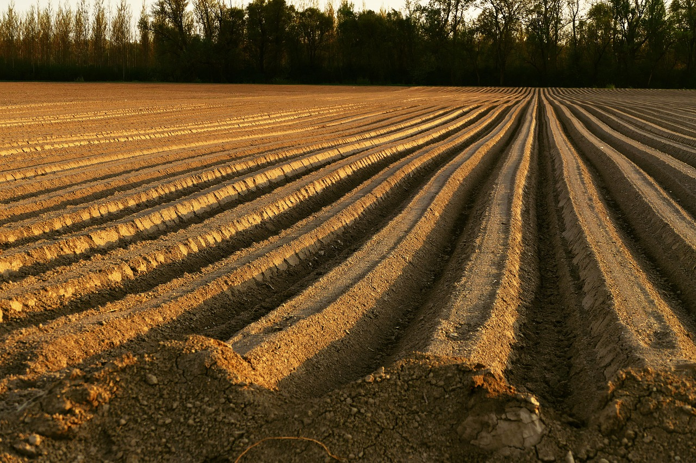
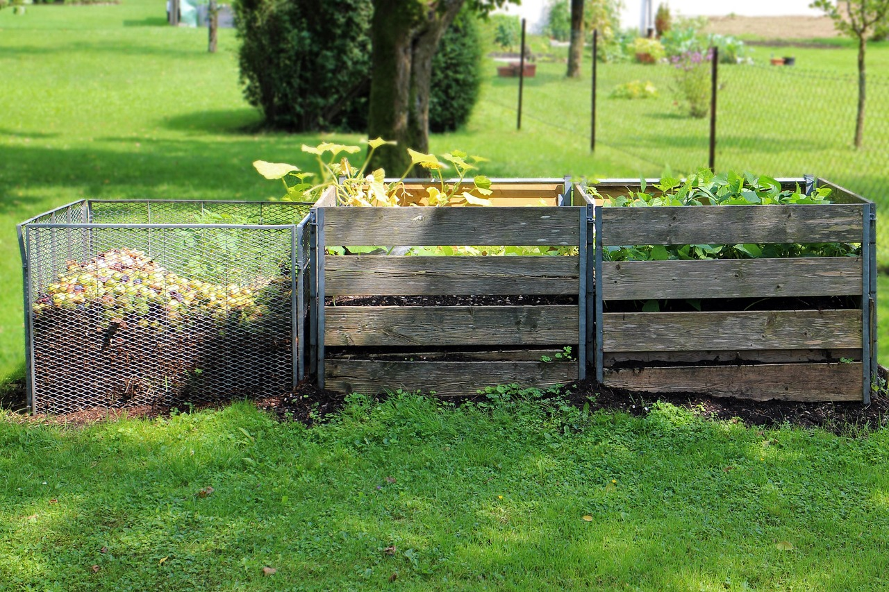
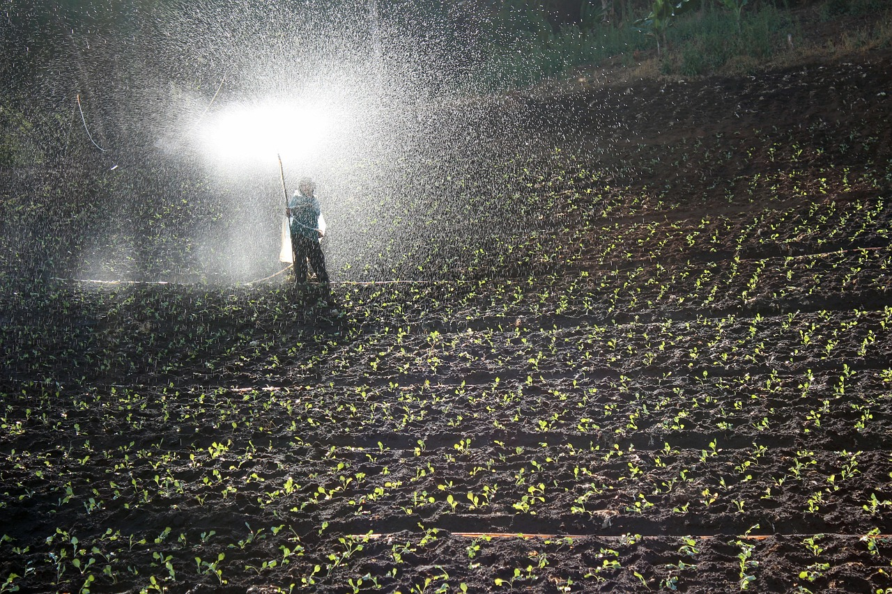

Soil & Fertilizer Tips

Soil Preparation
Healthy soil is the foundation of a successful garden. Make sure it’s loose and nutrient-rich.
 Organic CompostImproves soil structure and adds essential nutrients naturally.
 Fertilizer BasicsUse nitrogen, phosphorus, and potassium according to plant needs for healthy growth.